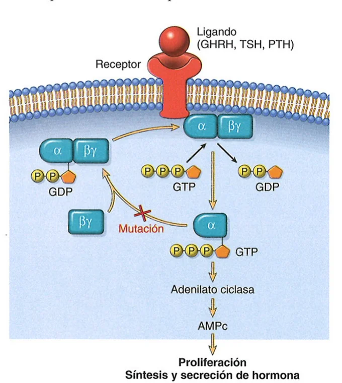
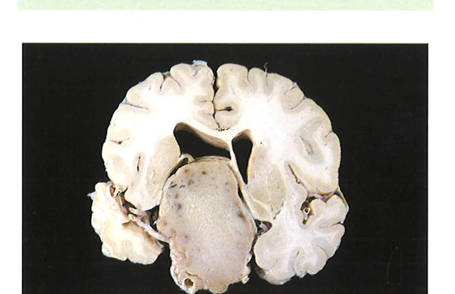
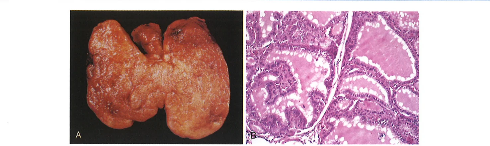
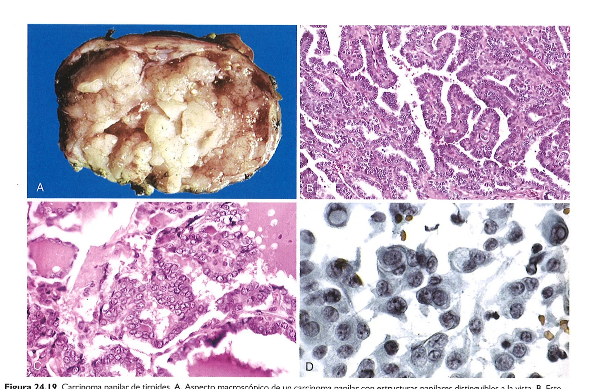
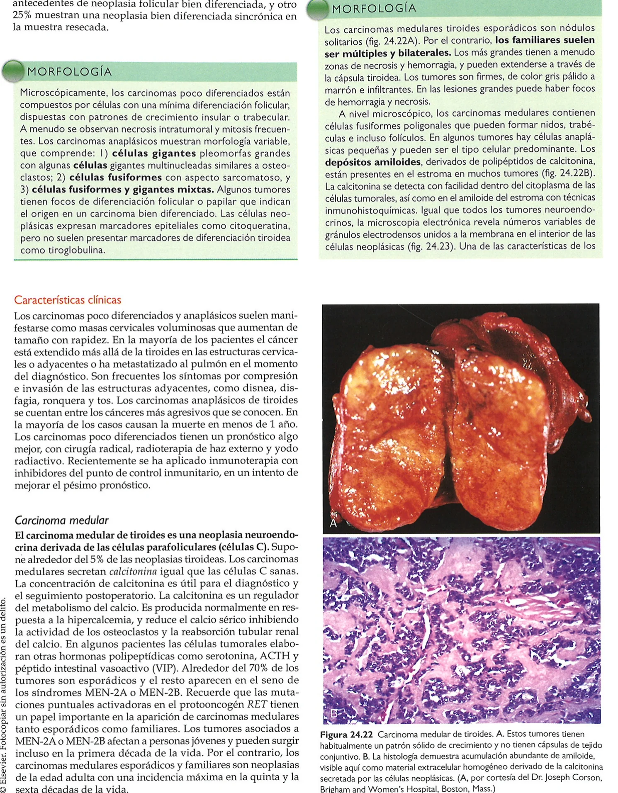
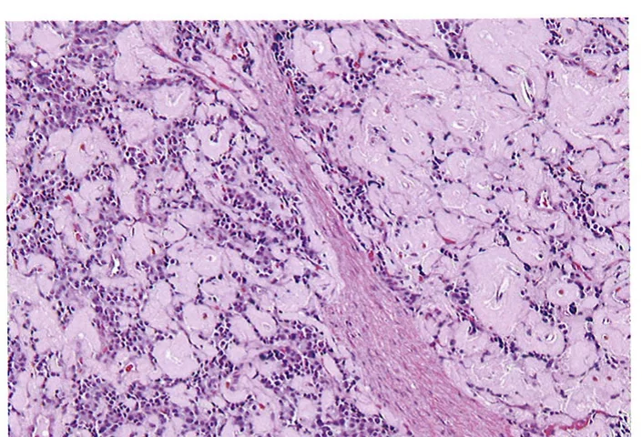
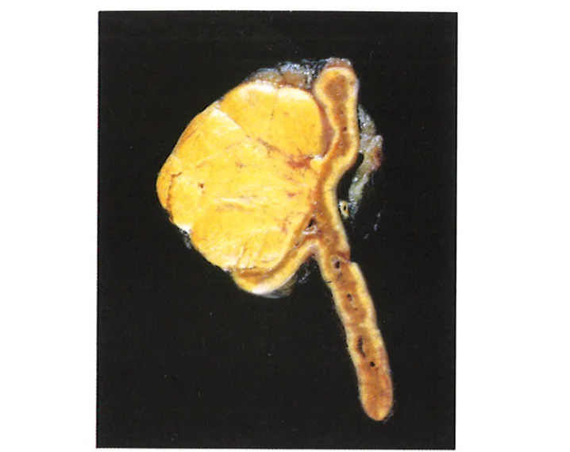
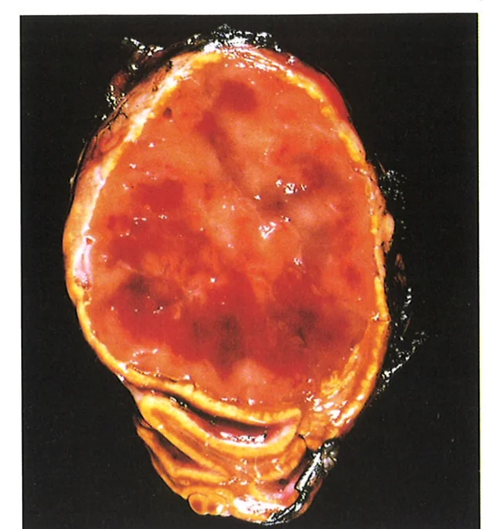

Qué cubre esta guía
Las citas p. N corresponden a la página impresa del libro. El texto se contrastó con el OCR del capítulo.
Lo esencial en 60 segundos
- Adenoma hipofisario: monomorfismo celular y ausencia de reticulina; GNAS en somatótropos (40%) y USP8 en corticótropos (30-60%); la apoplejía hipofisaria es urgencia neuroquirúrgica p. 1067, 1068-1070.
- Enfermedad de Graves: TSI contra el receptor de TSH en ~90% de los casos, triada de tirotoxicosis, oftalmopatía infiltrante y dermopatía; captación difusa de radioyodo p. 1081-1082.
- Carcinoma papilar: diagnóstico por núcleos en vidrio esmerilado, seudoinclusiones y cuerpos de psamoma; BRAF V600E en 50-80%; supervivencia a 10 años >95% p. 1087-1089.
- Carcinoma medular: calcitonina y CEA con amiloide estromal; 30% familiar por RET en línea germinal; tiroidectomía profiláctica en portadores de MEN-2 p. 1091-1092, 1130.
- Diabetes: HbA1c ≥6,5% diagnostica y <7% es la meta; DT1 autoinmunitaria con insulitis (HLA-DR3/DR4) y DT2 por resistencia a la insulina más fallo de célula β con amiloide islotal p. 1098, 1101-1105.
- Hipercalcemia: PTH alta = hiperparatiroidismo primario (adenoma 85-95%); PTH baja = cáncer por PTHrP en 80%; el feocromocitoma solo es maligno si metastatiza p. 1095, 1128.
Ideas clave
- El sistema endocrino regula el equilibrio metabólico mediante señalización autocrina, paracrina y endocrina; la producción hormonal suele estar controlada por factores tróficos hipofisarios con inhibición retrógrada. Las enfermedades endocrinas se agrupan en: 1) infraproducción o sobreproducción de hormonas y 2) lesiones de tipo masa, silentes o funcionantes; su estudio exige integrar morfología con determinaciones bioquímicas p. 1065-1066.
- La adenohipófisis (80% de la glándula) tiene seis tipos celulares definidos por hormonas y factores de transcripción: somatótropas, mamosomatótropas y lactótropas (PIT-1), corticótropas (TPIT) y gonadótropas (SF-1, GATA-2); esta clasificación se conserva en los adenomas y los define p. 1066, 1068.
- El adenoma hipofisario es la causa más frecuente de hiperpituitarismo; lactótropo > somatótropo > corticótropo. Rasgos morfológicos distintivos: monomorfismo celular y ausencia de red de reticulina. El hiperpituitarismo por déficit aparece al perderse ~75% del parénquima anterior p. 1067, 1070, 1072.
- Mutaciones oncógenas clave en tumores endocrinos: GNAS (Gs, 40% de los somatótropos), USP8 (30-60% de los corticótropos), MEN1, CDKN1B, PRKAR1A, AIP en línea germinal; la vía común es AMPc aumentado p. 1068-1069.
- Tiroides: la TSH activa Gs y AMPc en el folicular; la T3 se une al receptor nuclear con 10 veces más afinidad que T4. La tirotoxicosis puede existir sin hipertiroidismo (tiroiditis, estruma ovárico, tiroxina exógena); la determinación de TSH es el cribado más útil de la función tiroidea p. 1075-1077.
- Enfermedad de Graves: causa más frecuente de hipertiroidismo endógeno (85% de las tirotoxicosis con hiperfunción); autoanticuerpos estimulantes del receptor de TSH (TSI) en ~90%; triada de tirotoxicosis, oftalmopatía infiltrante y dermopatía (mixedema pretibial) p. 1081.
- Neoplasias foliculares tiroideas: CPT convencional con reordenamientos RET/NTRK o BRAF V600E (50-80%); neoplasias foliculares con RAS y PAX8-PPARG; la progresión a poco diferenciado/anaplásico suma TP53, CTNNB1 y TERT. La invasión capsular y/o vascular separa el carcinoma folicular del adenoma p. 1086-1087, 1090-1091.
- Carcinoma medular: neuroendocrino de células C (5% de los cánceres tiroideos), secreta calcitonina y CEA, con amiloide estromal; 70% esporádico, 30% en MEN-2 con mutación de línea germinal de RET; obliga a tiroidectomía profiláctica en portadores p. 1091-1092, 1130.
- Hiperparatiroidismo primario: causa más frecuente de hipercalcemia asintomática (adenoma solitario 85-95%); el cáncer es la causa más frecuente de hipercalcemia sintomática (PTHrP en 80% de los casos); clásica de "huesos dolorosos, cálculos renales, molestias abdominales y alteraciones psíquicas" p. 1093, 1095-1096.
- Diabetes: DT1 autoinmunitaria (5-10%) con destrucción de células β y déficit absoluto de insulina (HLA-DR3/DR4, anti-GAD, anti-ICA512, insulitis); DT2 (90-95%) por resistencia a la insulina más disfunción de célula β, sin autoinmunidad; criterios diagnósticos de glucemia en ayunas ≥126 mg/dl, al azar ≥200 mg/dl, PTGO ≥200 mg/dl y HbA1c ≥6,5% p. 1098-1099, 1101, 1103.
- Las complicaciones crónicas comparten mecanismos de la hiperglucemia sostenida: AGE-RAGE, activación de PKC, vía de los polioles (sorbitol) y hexosamina; macroangiopatía (ateroesclerosis acelerada, primera causa de muerte) y microangiopatía (retinopatía, nefropatía con glomeruloesclerosis nodular de Kimmelstiel-Wilson, neuropatía) p. 1108-1111.
- Síndromes MEN: MEN-1 (menina, tres P: paratiroides, páncreas, hipófisis); MEN-2A (Sipple: carcinoma medular, feocromocitoma, hiperplasia paratiroidea) y MEN-2B (sin hiperparatiroidismo, con neuromas y hábito marfanoide), ambos por RET activador; MEN-4 por CDKN1B. Los tumores MEN son más precoces, multifocales y precedidos de hiperplasia p. 1129-1130.
Hipófisis
La hipófisis es una estructura pequeña en la silla turca, conectada al hipotálamo por el tallo hipofisario; se divide en adenohipófisis (80%) y neurohipófisis. La neurohipófisis libera oxitocina y ADH sintetizadas en el hipotálamo; la ADH conserva agua respondiendo a barorreceptores auriculares y carotídeos y a osmorreceptores plasmáticos p. 1066-1067.
Adenomas hipofisarios e hiperpituitarismo
- Clasificación (tabla 24.1): somatótropo (PIT-1, GH; gigantismo/acromegalia), mamosomatótropo, lactótropo (PIT-1, RE, PRL), tirótropo (TSH), corticótropo (TPIT, ACTH; síndrome de Cushing y de Nelson), gonadótropo (FSH/LH) y de células nulas (solo efectos de masa) p. 1068.
- Microadenoma <1 cm, macroadenoma >1 cm; prevalencia en autopsias ~14%, la mayoría incidentalomas silentes. Los no funcionantes se presentan más tarde y son más grandes p. 1068.
- Patogenia: mutaciones somáticas de GNAS anulan la actividad GTPasa de Gs en ~40% de los somatótropos (AMPc constitutivo); USP8 activadora en 30-60% de los corticótropos potencia la señalización de EGFR; ~5% son por línea germinal (MEN1, CDKN1B, PRKAR1A, AIP) p. 1068-1069.
- Morfología: lesión blanda bien delimitada que puede erosionar la silla y comprimir el quiasma; hasta 30% carece de cápsula e infiltra (adenomas agresivos). Histología: células poligonales monomorfas en láminas o cordones, reticulina escasa, Ki-67 bajo; índices altos de proliferación se asocian a agresividad p. 1069-1070.
- Efectos de masa: hemianopsia bitemporal por compresión del quiasma, cefalea, hipertensión intracraneal, hipopituitarismo; la hemorragia aguda intratumoral produce apoplejía hipofisaria, urgencia neuroquirúrgica con riesgo de muerte súbita p. 1067, 1070, 1073.
- Adenoma lactótropo: el más frecuente (30% de los hiperfuncionantes); amenorrea, galactorrea, disminución de la libido y esterilidad; causa ~25% de las amenorreas; la prolactina sérica correlaciona con el tamaño. La hiperprolactinemia también puede ser fisiológica, por fármacos antidopaminérgicos, masas supraselares, insuficiencia renal o hipotiroidismo. Tratamiento con bromocriptina (agonista dopaminérgico) p. 1070-1071.
- Adenoma somatótropo: segundo en frecuencia; gigantismo en niños (antes del cierre epifisario) y acromegalia en adultos (prognatismo, dedos "de salchicha", visceromegalia, hiperostosis); por IGF-1 hepático. Se agrega disfunción gonadal, diabetes mellitus, hipertensión, insuficiencia cardiaca y mayor riesgo de cáncer digestivo. Diagnóstico: GH e IGF-1 altos sin supresión de GH tras sobrecarga oral de glucosa; tratamiento con cirugía, análogos de somatostatina y antagonistas del receptor de GH. Los de granulación escasa son más agresivos y responden peor p. 1071.
- Adenoma corticótropo: microadenoma basófilo PAS+ (POMC), TPIT+; la variante de células de Crooke (citoqueratina anular) es más agresiva. Produce síndrome de Cushing; el hipercortisolismo por ACTH hipofisaria se denomina enfermedad de Cushing. Tras suprarrenalectomía puede desarrollarse síndrome de Nelson: adenoma destructivo con hiperpigmentación (POMC/MSH) sin hipercortisolismo p. 1071-1072.
- Otros: gonadótropos (la mayoría silentes, síntomas neurológicos y déficit de LH), tirótropos (1%, hipertiroidismo infrecuente), plurihormonales (agresivos, estirpe PIT-1), células nulas, carcinoma hipofisario (<1%, definido solo por metástasis craneovertebrales o sistémicas, secreta prolactina o ACTH) y blastoma hipofisario (niños <2 años con DICER1, "pequeñas células azules redondas", enfermedad de Cushing y blastoma pleuropulmonar) p. 1072.




Hipopituitarismo
- Aparece al perderse ~75% del parénquima anterior; si se acompaña de diabetes insípida, el origen es casi siempre hipotalámico. Causas: tumores con efecto de masa, traumatismo y hemorragia subaracnoidea, cirugía o radiación, apoplejía hipofisaria, necrosis isquémica, quistes, síndrome de silla vacía, lesiones hipotalámicas, inflamatorias y defectos genéticos p. 1072-1073.
- Síndrome de Sheehan: necrosis isquémica posparto; la hipófisis duplica su tamaño en el embarazo sin aumento proporcional del flujo venoso de baja presión, y la hemorragia obstétrica o el shock precipitan el infarto; queda una silla vacía fibrosa. La hipófisis posterior, irrigada por ramas arteriales directas, no suele infartarse p. 1073.
- Síndrome de silla vacía: primario (defecto del diafragma selar, hernia de aracnoides, mujeres obesas multíparas, defectos de campo visual, ocasional hiperprolactinemia) o secundario a cirugía o infarto de una masa previa p. 1073.
- Clínica: enanismo hipofisario (déficit de GH), amenorrea y esterilidad o pérdida de libido (gonadotropinas), hipotiroidismo e hiposuprarrenalismo (TSH, ACTH), fracaso de la lactancia (prolactina) y palidez por pérdida de melanotropinas p. 1073.
Síndromes hipofisarios posteriores
- Diabetes insípida central: déficit de ADH por traumatismo, tumores, inflamación o cirugía; formas genéticas por AVP (autosómica dominante) y AVPR2 (ligada al X). Poliuria de orina diluida, hipernatremia, sed y polidipsia; deshidratación mortal en quienes no pueden beber. Se distingue de la diabetes insípida nefrógena (insensibilidad tubular a la ADH) p. 1073-1074.
- SIADH: exceso de ADH con reabsorción de agua libre e hiponatremia y edema cerebral; volumen sanguíneo normal sin edema periférico. Causas: secreción ectópica (sobre todo carcinoma pulmonar microcítico), fármacos y trastornos del SNC p. 1074.
Tumores supraselares hipotalámicos
- Gliomas y craneofaringiomas (1-5% de los tumores intracraneales, de vestigios de la bolsa de Rathke); incidencia bifásica: infancia (5-15 años) y adultos >65 años; cefalea, trastornos visuales y retraso del crecimiento por déficit de GH p. 1074.
- Adamantinomatoso (infantil): queratina "húmeda" laminar, empalizada periférica, calcificaciones radiológicas, quistes con líquido rico en colesterol ("aceite de maquinaria"), mutaciones de CTNNB1. Papilar (adulto): sin calcificación, mutaciones activadoras de BRAF V600E, con opción de inhibidores de BRAF. Supervivencia excelente si miden <5 cm p. 1074.
Tiroides
La tiroides deriva del epitelio faríngeo que desciende desde el agujero ciego (explica la tiroides lingual ectópica); lóbulos con 20-40 folículos llenos de tiroglobulina PAS+. La TSH se une a su receptor con activación de Gs y AMPc, promoviendo crecimiento y secreción de T4 (y algo de T3); en periferia T4 se desyoda a T3, que se une al receptor nuclear con 10 veces más afinidad. Las células C parafoliculares secretan calcitonina, que inhibe la resorción osteoclástica p. 1075.
| Concepto | Detalle |
|---|---|
| Bociógenas | Sustancias que suprimen la síntesis de T4/T3, elevan TSH y causan bocio |
| Propiltiouracilo | Inhibe la oxidación del yodo y la desyodación periférica de T4 a T3 |
| Yodo en dosis altas | Bloquea la liberación de hormona al inhibir la proteólisis de tiroglobulina |
| Efecto T3/T4 | ↑catabolismo de hidratos de carbono y lípidos, ↑síntesis proteica, ↑metabolismo basal; papel crítico en el desarrollo cerebral fetal y neonatal |
Fuente: p. 1075.
Hipertiroidismo y tirotoxicosis
- La tirotoxicosis es el estado hipermetabólico por T4/T3 libre elevada; el hipertiroidismo (hiperfunción glandular) es su causa más frecuente, pero no la única. Causas con hiperfunción: Graves (~85%), bocio multinodular hiperfuncional y adenoma hiperfuncional. Sin hipertiroidismo: tiroiditis granulomatosa (dolorosa), tiroiditis linfocítica subaguda (indolora), estruma ovárico y tirotoxicosis ficticia p. 1075-1076.
- Clínica: hipermetabolismo con piel caliente, intolerancia al calor, sudoración, pérdida de peso con apetito aumentado; manifestaciones cardíacas precoces (taquicardia, palpitaciones, cardiomegalia, fibrilación auricular en mayores, miocardiopatía tirotóxica); hiperactividad simpática (temblor, ansiedad, insomnio, miopatía proximal, hiperdefecación que responde a β-bloqueantes); osteoporosis por resorción ósea p. 1076.
- Mirada fija con ojos muy abiertos por hiperactividad simpática en cualquier hipertiroidismo, pero la oftalmopatía con proptosis es solo de Graves p. 1076.
- Tormenta tiroidea: inicio brusco de hipertiroidismo intenso (infección, cirugía, suspensión de antitiroideos), fiebre y taquicardia desproporcionada; urgencia médica con mortalidad por arritmias. Hipertiroidismo apático: ancianos con presentación confusa, detectado por laboratorio ante pérdida de peso o deterioro cardiovascular p. 1076-1077.
- Laboratorio: TSH baja con T4 libre alta; la TSH es el cribado más sensible. En la toxicosis T3 predominante la T4 libre puede ser normal. El hipertiroidismo hipofisario (secundario) cursa con TSH normal o alta. La captación de yodo radiactivo diferencia etiología: difusa aumentada (Graves), nódulo solitario caliente (adenoma tóxico) o captación baja (tiroiditis) p. 1077.
- Tratamiento: β-bloqueante sintomático, tionamidas (metimazol, propiltiouracilo), yodo para bloquear la liberación, y yodo radiactivo que ablaciona la función en 6-18 semanas p. 1077.
Hipotiroidismo
- Prevalencia de hipotiroidismo manifiesto 0,3% y subclínico >4%; 10 veces más frecuente en la mujer y aumenta con la edad. Causas primarias: disgenesia tiroidea, hipotiroidismo autoinmunitario (Hashimoto, la causa más frecuente en zonas con yodo suficiente), postablación (cirugía, radioyodo), deficiencia de yodo, fármacos (litio) y bocio dishormonógeno; secundario o central por insuficiencia hipofisaria o hipotalámica p. 1077-1078.
- Cretinismo: hipotiroidismo del lactante y primera infancia; discapacidad intelectual grave, talla baja, rasgos faciales toscos, lengua sobresaliente y hernia umbilical. Antes endémico por deficiencia de yodo. La gravedad del daño cerebral depende del momento de la deficiencia: si es materna y precoz (antes de que la tiroides fetal funcione) el deterioro es máximo p. 1078.
- Mixedema (adulto y niño mayor): cansancio, apatía, lentitud mental que simula depresión, intolerancia al frío, sobrepeso, estreñimiento, piel fría y pálida; disminución del gasto cardíaco; hipercolesterolemia y LDL altas proaterógenas. Por acumulación de glucosaminoglucanos y ácido hialurónico: edema sin fóvea, rasgos faciales toscos, macroglosia y voz grave. Laboratorio: TSH alta en el primario (no en el central) y T4 baja en cualquier causa p. 1078.
Tiroiditis
| Tipo | Etiología | Clínica | Morfología |
|---|---|---|---|
| Hashimoto | Autoinmunitaria; autoanticuerpos antitiroglobulina y antiperoxidasa; genes CTLA4, PTPN22, IL2RA | Bocio indoloro con hipotiroidismo gradual; mujer 10-20:1; 45-65 años; puede haber hashitoxicosis previa | Infiltrado linfocítico denso con centros germinales, células de Húrthle, fibrosis que no sobrepasa la cápsula |
| Linfocítica subaguda (indolora) | Presunta autoinmunitaria; hasta 5% posparto (tiroiditis posparto) | Hipertiroidismo transitorio leve, a veces sigue hipotiroidismo; 1/3 queda hipotiroideo en 10 años | Infiltrado linfocítico con centros germinales, sin fibrosis ni células de Húrthle prominentes |
| Granulomatosa (De Quervain) | Postvírica (Coxsackie, parotiditis, sarampión); autolimitada | Causa más frecuente de dolor tiroideo; tirotoxicosis transitoria con captación de yodo baja; remite en 2-6 semanas | Folículos destruidos con células gigantes multinucleadas englobando coloide; mujer 4:1, 40-50 años |
| Riedel | Enfermedad relacionada con IgG4 | Masa tiroidea dura y fija que simula carcinoma; fibrosis extensa cervical | Fibrosis que invade estructuras contiguas |
Fuente: p. 1078-1081.
- Hashimoto: destrucción por linfocitos T citotóxicos CD8+, citocinas de Th1 (IFN-γ) y citotoxicidad dependiente de anticuerpo. Mayor riesgo de otras autoinmunidades (DT1, suprarrenalitis autoinmunitaria, lupus, miastenia, Sjögren) y de linfoma B de zona marginal tiroideo; relación controvertida con carcinoma papilar p. 1078-1080.
Enfermedad de Graves
- Triada: hipertiroidismo con bocio difuso, oftalmopatía infiltrante con exoftalmos y dermopatía infiltrante (mixedema pretibial, minoría). Máxima incidencia entre 20 y 40 años; mujeres hasta 10:1; presente en 1,5-2% de las mujeres estadounidenses p. 1081.
- Patogenia: inmunoglobulinas estimulantes de la tiroides (TSI) contra el receptor de TSH en ~90%, que activan la adenilato ciclasa; pueden coexistir anticuerpos bloqueantes (minoría con hipotiroidismo). Concordancia 30-40% en monocigóticos vs <5% en dicigóticos; polimorfismos CTLA4, PTPN22, IL2RA y TSHR. La oftalmopatía se debe a linfocitos T CD4+ que activan fibroblastos retroorbitarios con síntesis de glucosaminoglucanos (ácido hialurónico, condroitín sulfato), edema de músculos extraoculares e incremento de adipocitos p. 1081.
- Morfología: glándula simétrica aumentada (>80 g es frecuente), parénquima carnoso; folículos tapizados por epitelio cilíndrico alto con papilas sin eje fibrovascular (difieren del carcinoma papilar) y coloide pálido con bordes festoneados; infiltrados linfoides con centros germinales. El yodo preoperatorio induce involución y el propiltiouracilo aumenta la hiperplasia p. 1081-1082.
- Clínica: bocio difuso con soplo audible, exoftalmos que puede persistir o progresar pese al tratamiento (riesgo de lesión corneal), mixedema pretibial; mayor riesgo de lupus, anemia perniciosa, DT1 y Addison. Laboratorio: T4 y T3 libres altas, TSH baja, captación difusa aumentada de radioyodo. Tratamiento: β-bloqueantes, tionamidas, radioyodo y tiroidectomía en bocios compresivos p. 1082.


Bocios difuso y multinodular
- El bocio se debe a síntesis tiroidea deficiente (habitualmente deficiencia de yodo) con elevación compensadora de TSH; aumenta la masa funcional y suele mantener el eutriroidismo. Dos formas: no tóxico difuso (simple) y multinodular p. 1082-1083.
- Bocio simple: endémico (>10% de la población; Andes, Himalaya; aún 200 millones en riesgo) o esporádico (mujeres, pubertad); bociógenos dietéticos como las Brassicaceae y la mandioca (tiocianato que bloquea el transporte de yodo). Fase hiperplásica (epitelio cilíndrico apiñado) seguida de involución coloidea (bocio coloideo, epitelio aplanado con coloide abundante); casi siempre eutiroideo, clínica por efecto de masa p. 1083.
- Bocio multinodular: casi todos los bocios simples de larga evolución; el mayor aumento de tamaño tiroideo (hasta >2.000 g), confunde con neoplasia más que ningún trastorno tiroideo. Coexisten nódulos policlonales y monoclonales; mutaciones activadoras de la vía de TSH en nódulos autónomos; hemorragia, fibrosis, calcificación y cambios quísticos por sobrecarga física p. 1083-1084.
- Clínica: compresión traqueal, disfagia, síndrome de la vena cava superior, bocio intratorácico; ~10% desarrolla nódulo autónomo hipertiroideo en 10 años (bocio multinodular tóxico o síndrome de Plummer). Incidencia de cáncer baja (<5%); alertar ante cambio brusco de tamaño o ronquera. Gammagrafía con captación irregular; la punción con aguja fina ayuda a diferenciar hiperplasia de neoplasia p. 1084.
Neoplasias de la tiroides
- El nódulo solitario es palpable en 1-10% de los adultos, 4 veces más en la mujer; la proporción benigno/maligno es ~10:1 y solo ~1% de los nódulos son neoplásicos. Nódulos solitarios, en jóvenes y en hombres son más sospechosos; la radiación de cabeza y cuello aumenta el riesgo; los nódulos calientes son más a menudo benignos. La punción con aguja fina y la resección dan el diagnóstico definitivo p. 1084-1085.
- Adenoma folicular: masa solitaria encapsulada, bien delimitada, que comprime el parénquima; promedio 3 cm; folículos uniformes con coloide, posible cambio oxifílico (célula de Húrthle); la cápsula intacta es esencial frente al carcinoma. Adenomas tóxicos (50-80% con mutaciones de TSHR, GNAS o EZH1) son nódulos calientes con autonomía tiroidea y no son precancerosos; una minoría de adenomas no funcionantes (20-40%) con reordenamientos RAS o PPARγ sí puede preceder a carcinoma folicular. Diagnóstico definitivo solo en la pieza extirpada; pronóstico excelente p. 1085-1086.
- Cáncer tiroideo: 52.000 casos nuevos en EE. UU. (2019) con ~2.000 muertes; incidencia en aumento (~3% anual) y supervivencia a 5 años >98% ("sobrediagnóstico" de lesiones pequeñas). Subtipos: papilar 80-85%, folicular 10-15%, poco diferenciado y anaplásico <5%, medular 5% p. 1086.
- Relaciones precursor-tumor: microcarcinoma papilar → CPT convencional; neoplasia folicular no invasiva con características nucleares de tipo papilar → variante folicular encapsulada invasiva; adenoma folicular no funcionante → carcinoma folicular; los poco diferenciados y anaplásicos surgen por desdiferenciación de carcinomas bien diferenciados p. 1086.
- Patogenia molecular: CPT convencional con fusiones RET/PTC o NTRK y mutaciones BRAF V600E (50-80%; sine qua non en la variante de células altas; asocia menor diferenciación, extensión extratiroidea y recidiva). Neoplasias foliculares con RAS (20-40% de adenomas, 30-50% de carcinomas) y PAX8-PPARG (t(2;3), 20-50% de carcinomas). Poco diferenciados y anaplásicos agregan TP53, CTNNB1 y TERT. Medulares familiares y esporádicos (mitad) con mutaciones activadoras de RET sin reordenamientos RET/PTC. Factor ambiental: radiación ionizante en las dos primeras décadas (Chernóbil); deficiencia de yodo favorece lesiones foliculares p. 1086-1088.
- Carcinoma papilar: solitario o músculo, a veces quístico, con fibrosis y calcificación; microcarcinoma <1 cm. Histología: papilas ramificadas con tallo fibrovascular y núcleos en vidrio esmerilado ("ojo de la huérfana Annie"), seudoinclusiones y surcos nucleares (el diagnóstico es nuclear, incluso sin papilas); cuerpos de psamoma en el eje de las papilas, casi exclusivos del CPT y muy fiables en la punción; invasión linfática frecuente con metástasis cervicales en hasta 50%, sin impacto en el pronóstico. Variantes: células altas (mayores, BRAF + RET/PTC, agresiva) y esclerosante difusa (jóvenes, metástasis ganglionares casi constantes, RET/PTC sin BRAF). Pronóstico excelente: supervivencia a 10 años >95%; los microcarcinomas y las neoplasias no invasivas con características nucleares de tipo papilar bastan con lobulectomía, evitando parálisis de cuerdas vocales e hipoparatiroidismo yatrógenos p. 1088-1089.
- Carcinoma folicular: 5-15% (25-40% en zonas con deficiencia de yodo); mujeres 3:1, 40-60 años. Nódulo único bien circunscrito o infiltrante; folículos pequeños con coloide similar a la tiroides normal, sin rasgos nucleares papilares ni psamoma; el diagnóstico exige demostrar invasión capsular y/o vascular en la cápsula (no cuentan tapones en vasos intratumorales). Diseminación hematógena a hueso, pulmón e hígado; ganglios habitualmente libres. Invasión mínima: supervivencia a 10 años >90%; invasión amplia: hasta la mitad muere en 10 años. Tratamiento: tiroidectomía total con radioyodo y supresión de TSH; seguimiento con tiroglobulina sérica p. 1089-1090.
- Poco diferenciado y anaplásico: <5% de los tumores, media 65 años, mortalidad casi 100% en el anaplásico. Poco diferenciado: patrón insular o trabecular con necrosis y mitosis. Anaplásico: células gigantes pleomorfas tipo osteoclasto, fusiformes sarcomatosas o mixtas; citoqueratina+ pero pierden tiroglobulina. Masas cervicales de crecimiento rápido con disnea, disfagia, ronquera; muerte en <1 año en la mayoría; el poco diferenciado mejora algo con cirugía radical, radioterapia, yodo radiactivo e inmunoterapia con inhibidores del punto de control p. 1090-1091.
- Carcinoma medular: neuroendocrino de células C; secreta calcitonina (útil para diagnóstico y seguimiento) y a veces serotonina, ACTH o VIP; CEA como biomarcador adicional. ~70% esporádicos (nódulo solitario) y 30% en MEN-2A o 2B (multifocales y bilaterales, más jóvenes). Histología: células fusiformes o poligonales en nidos, trabéculas o folículos, con depósitos amiloides derivados de calcitonina y gránulos electrodensos; la hiperplasia de células C multicéntrica adyacente sugiere forma familiar. Pese a la calcitonina alta, la hipocalcemia es rara. Los MEN-2B son más agresivos; tiroidectomía profiláctica precoz en portadores de RET; inhibidores de RET en desarrollo p. 1091-1092.
- Malformación congénita: quiste del conducto tirogloso, línea media del cuello por delante de la tráquea, tapizado por epitelio escamoso (arriba) o tiroideo (abajo) con infiltrado linfocítico; puede infectarse y rara vez transformarse en cáncer p. 1092.




Paratiroides
Cuatro glándulas de las bolsas faríngeas (pueden ectopiarse a vaina carotídea, timo o mediastino), con células principales (gránulos de PTH) y oxífilas. El calcio ionizado bajo estimula la PTH, que aumenta la reabsorción tubular de calcio, activa la vitamina D renal (↑absorción digestiva de calcio), aumenta la excreción de fosfato y activa los osteoclastos; la hipercalcemia resultante inhibe la PTH por retroalimentación clásica p. 1093.
Hiperparatiroidismo primario
- Definición: sobreproducción autónoma de PTH. Lesiones: adenoma 85-95%, hiperplasia primaria 5-10%, carcinoma 1%. Mujer:hombre 4:1, mayoría >50 años; hasta 80% se diagnostica fuera del hospital por hipercalcemia incidental p. 1093.
- Biología molecular: inversiones del gen CCDN1 (ciclina D1) recolocada junto al promotor del PTH en 10-20% de los adenomas (sobreexpresada en ~40%); mutaciones somáticas de MEN1 en 30-35%; CDC73/parafibromina mutada en ~70% de los carcinomas paratiroideos (síndrome de hiperparatiroidismo-tumor mandibular en línea germinal). Síndromes familiares: MEN-1, MEN-2, MEN-4 e hipercalcemia hipocalciúrica familiar (CASR) p. 1094.
- Morfología: adenoma solitario de 0,5-5 g, rojo-marrón, de células principales, con reborde de paratiroides normal comprimida; las demás glándulas son normales o atróficas. La hiperplasia afecta las cuatro glándulas (aunque puede ser asimétrica), con escasa grasa estromal. En los adenomas puede haber atipia endocrina sin valor de malignidad; el carcinoma solo se diagnostica por invasión de tejidos adyacentes o metástasis (1/3 recidiva, 1/3 disemina) p. 1094-1095.
- Hueso: osteoporosis con predilección cortical; osteitis disecante (osteoclastos tunelando el centro de las trabéculas con aspecto de vías de tren); tumor pardo (microfracturas con hemorragia, macrófagos y hemosiderina); la combinación es la osteitis fibrosa quística generalizada (enfermedad ósea de Recklinghausen), hoy infrecuente por diagnóstico precoz. Riñón: nefrolitiasis y nefrocalcinosis; calcificación metastásica en estómago, pulmones, miocardio y vasos p. 1095.
- Laboratorio: PTH desproporcionadamente alta para el calcio sérico; hipofosfatemia, hipercalciuria e hiperfosfaturia. El cáncer es la causa más frecuente de hipercalcemia sintomática del adulto: 80% por PTHrP (pulmón, mama, cabeza y cuello, riñón, mieloma) y 20% por metástasis osteolíticas; en estos casos la PTH está baja o indetectable; existen radioinmunoensayos de PTHrP para diferenciar p. 1095.
- Clínica sintomática: huesos dolorosos y fracturas, nefrolitiasis en 20% con uropatía obstructiva, digestivos (estreñimiento, úlcera péptica, pancreatitis, litiasis biliar), SNC (depresión, obnubilación, convulsiones), debilidad neuromuscular y calcificación valvular aórtica o mitral p. 1095-1096.
Hiperparatiroidismo secundario y terciario
- Secundario: hipocalcemia crónica compensada; primera causa la insuficiencia renal crónica (hiperfosfatemia, déficit de 1α-hidroxilasa y pérdida de la supresión de la PTH por vitamina D); también hipocalcemia por déficit de calcio, esteatorrea y déficit de vitamina D. Glándulas hiperplásicas con células principales o claras; clínica dominada por la nefropatía; lesiones óseas leves (osteodistrofia renal); puede haber calcifilaxia por calcificación vascular isquémica. Tratamiento con vitamina D y quelantes de fósforo p. 1096.
- Terciario: actividad paratiroidea autónoma con hipercalcemia tras corregir la causa (por ejemplo tras trasplante renal); puede requerir paratiroidectomía p. 1096.
Hipoparatiroidismo y seudohipoparatiroidismo
- Hipoparatiroidismo adquirido casi siempre postquirúrgico (tiroidectomía, disección cervical radical, paratiroidectomía excesiva). Genéticos: APS-1 (AIRE; con candidiasis mucocutánea e insuficiencia suprarrenal), hipoparatiroidismo autosómico dominante por CASR ganador de función (hipocalcemia e hipercalciuria), hipoparatiroidismo aislado familiar (mutaciones del gen PTH o de GCM2) y agenesia paratiroidea con aplasia del timo (DiGeorge, deleción 22q11) p. 1096-1097.
- Clínica: tetania por hipocalcemia, desde parestesias peribucales y espasmo carpopedio hasta laringoespasmo y convulsiones; signos de Chvostek (golpeo del nervio facial) y Trousseau (espasmo carpal con el manguito). Cambios mentales, calcificación de ganglios basales con parkinsonismo y hipertensión intracraneal, cataratas, prolongación del QT y anomalías dentales por hipoplasia del esmalte p. 1097.
- Seudohipoparatiroidismo: resistencia de los órganos diana a la PTH con PTH normal o alta; hipocalcemia, hiperfosfatemia; por defectos de la vía común de la proteína G compartida con TSH y FSH/LH (hipogonadismo hipogonadotrópico en mujeres) p. 1097.
Páncreas endocrino
Un millón de islotes de Langerhans con cuatro tipos principales de células: β (insulina), α (glucagón), δ (somatostatina, inhibe insulina y glucagón) y PP (polipéptido pancreático); más células D1 (VIP, glucogenólisis y diarrea secretora) y enterocromafines (serotonina, tumores carcinoideos pancreáticos) p. 1097.
Diabetes mellitus
- Grupo de trastornos metabólicos con hiperglucemia por defecto en la secreción o acción de la insulina o ambos; primera causa de nefropatía terminal, ceguera del adulto y amputaciones no traumáticas en EE. UU.; >30 millones de afectados (9% de la población), 84 millones con prediabetes y coste anual de 327.000 millones de dólares p. 1098.
- Criterios diagnósticos (ADA/OMS): glucemia en ayunas ≥126 mg/dl; al azar ≥200 mg/dl con signos hiperglucémicos clásicos; PTGO ≥200 mg/dl a las 2 h con 75 g; HbA1c ≥6,5%. Deben confirmarse salvo la glucemia al azar sintomática; la hiperglucemia transitoria por estrés agudo (infección, quemadura, traumatismo) no diagnostica diabetes. Prediabetes: ayunas 100-125 mg/dl, PTGO 140-199 mg/dl o HbA1c 5,7-6,4%; un cuarto progresa a DT2 en 5 años p. 1098-1099.
- Clasificación: DT1 (autoinmunitaria o idiopática, 5-10%, deficiencia absoluta de insulina) y DT2 (90-95%, resistencia a la insulina más disfunción de célula β); formas monogénicas (MODY por HNF4A, GCK, HNF1A, PDX1, HNF1B, NEUROD1; diabetes neonatal por KCNJ11 y ABCC8; MIDD mitocondrial), pancreatopatías (diabetes 3C), endocrinopatías (acromegalia, Cushing, feocromocitoma, glucagonoma), fármacos (glucocorticoides), síndromes genéticos y diabetes gestacional p. 1099.
| Característica | DT1 | DT2 |
|---|---|---|
| Inicio | Infancia y adolescencia | Adulto (creciente en jóvenes); 80% obesos |
| Insulina | Descenso progresivo | Alta al inicio, descenso moderado tardío |
| Autoanticuerpos | Antiislotes (antiinsulina, anti-GAD, anti-ICA512) | Ausentes |
| Complicación aguda típica | Cetoacidosis diabética | Estado hiperglucémico hiperosmolar |
| Genética | HLA clase I y II del CPH; CTLA4, PTPN22, VNTR de insulina | Sin HLA; TCF7L2, PPARG, FTO |
| Patogenia | Fallo de la autotolerancia de linfocitos T | Resistencia a la insulina y fallo compensador de la célula β |
| Patología | Insulitis; deplección de células β e islotes atróficos | Sin insulitis; amiloide en islotes; depleción ligera de células β |
Fuente: p. 1100 (tabla 24.7).
- Homeostasis de la glucosa: producción hepática (ayuno, regulada por insulina baja y glucagón alto) y captación periférica posprandial, sobre todo músculo estriado, guiada por insulina alta y glucagón bajo p. 1100.
- Secreción de insulina: la glucosa entra por GLUT-2, genera ATP, cierra el canal de K+ sensible a ATP, despolariza, entra Ca2+ y libera la insulina almacenada (primera fase); luego síntesis activa (segunda fase). La insulina se secreta equimolar con el péptido C, marcador indirecto de función de la célula β (bajo en DT1, alto en hiperinsulinemia por resistencia). Las incretinas GIP y GLP-1 potencian la secreción de insulina, frenan el glucagón y retrasan el vaciamiento gástrico; son degradadas por DPP-4; su efecto está atenuado en DT2, base de los agonistas del receptor de GLP-1 y los inhibidores de DPP-4 p. 1100-1101.
- Acción de la insulina: hormona anabólica más potente; receptor tetrámero α2β2 con tirosina cinasa que fosforila IRS y activa la vía PI3K/Akt, con translocación de GLUT-4, síntesis de glucógeno y proteínas (mTOR), inhibición de la gluconeogenia (FOXO) y captación de glucosa en músculo y tejido adiposo p. 1101-1102.
- Patogenia de la DT1: autoinmunitaria, con concordancia ~50% en monocigóticos; el haplotipo HLA aporta hasta el 50% de la predisposición (DR3/DR4 en 90-95% de los blancos afectados; heterocigotos compuestos DR3/DR4 en 40-50% vs 5% de controles); otros loci: VNTR del promotor de insulina, CTLA4, PTPN22 y AIRE. Factores ambientales enigmáticos (mimetismo molecular vírico propuesto). Tres estadios: 1) autoinmunidad positiva normoglucémica (<50% de riesgo a 5 años), 2) autoinmunidad con disglucemia presintomática (75% a 5 años), 3) diabetes sintomática tras destruir >90% de las células β. El defecto fundamental es la falta de autotolerancia de los linfocitos T (deleción tímica y Treg defectuosas); lesionan las células β Th1 (IFN-γ, TNF) y CTL CD8+; puede aparecer con bloqueantes del punto de control inmunitario p. 1101-1103.
- Patogenia de la DT2: concordancia >90% en monocigóticos, riesgo familiar 5-10 veces; ≥30 loci de bajo efecto (función de célula β, tejido adiposo, obesidad: TCF7L2, PPARG, FTO); el peso principal es ambiental. Obesidad central y visceral (más relevante que la subcutánea), sedentarismo, alteración circadiana y apnea del sueño; la combinación de obesidad, hiperglucemia, dislipidemia e hipertensión es el síndrome metabólico p. 1103-1104.
- Resistencia a la insulina: incapacidad hepática de frenar la gluconeogenia (glucemia de ayuno alta), captación muscular posprandial deficiente (glucemia posprandial alta) y lipólisis desinhibida con ácidos grasos libres (AGL) altos. Los AGL saturan la oxidación y acumulan DAG, ceramidas y otros lipotoxicos que bloquean la señalización del receptor; las adipocinas pro y antiglucémicas (la adiponectina baja en la obesidad) y la inflamación crónica mediada por el inflamasoma con IL-1β agravan la resistencia; puede añadirse esteatosis hepática no alcohólica (EHNA) p. 1104-1105.
- Disfunción de célula β: requisito para la diabetes manifiesta; inicialmente hiperfuncionante, luego agotada (deficiencia relativa). Mecanismos: lipotoxicidad, glucotoxicidad, respuesta anómala a incretinas y depósito de amiloide en los islotes (>90% de los islotes en DT2 de larga evolución) p. 1105.
- Formas monogénicas: 1-2% de los diabéticos; MODY (el subtipo más frecuente por mutaciones de GCK, etapa limitante de la secreción de insulina); resistencia a la insulina de tipo A por mutaciones del receptor con acantosis nigricans, ovarios poliquísticos e hiperandrogenismo p. 1105.
- Diabetes y embarazo: pregestacional o gestacional (5-9% de los embarazos); el embarazo es "diabetógeno" (resistencia a la insulina hormonal). Riesgo de muerte fetal, malformaciones y macrosomia; la gestacional suele remitir, pero la mayoría desarrolla diabetes en 10-20 años p. 1105-1106.
- Clínica: DT1 con periodo de "luna de miel" inicial de mínima necesidad de insulina; el debut puede precipitarse por infección. DT2 en mayores de 40 años obesos, a menudo hallada en exámenes de rutina; cribado recomendado desde los 45 años y antes si hay obesidad, antecedentes o síndrome metabólico p. 1106.
- Triada clásica: poliuria (glucosuria con diuresis osmótica), polidipsia (hiperosmolaridad y activación de osmorreceptores) y polifagia (catabolismo proteico); con pérdida de peso paradójica que siempre sugiere diabetes p. 1106.
- Cetoacidosis diabética (DT1): precipitada por omisión de insulina, infección, traumatismo o fármacos; la deficiencia de insulina con exceso de glucagón eleva la glucemia a 250-600 mg/dl y por lipasa sensible a hormonas aumenta la cetogénesis hepática (acetoacetato, β-hidroxibutirato); cetonemia y cetonuria que evolucionan a acidosis metabólica. Clínica: fatiga, náuseas, vómitos, dolor abdominal, olor a fruta, respiración de Kussmaul, coma; requiere insulina, corrección de la acidosis y tratamiento del precipitante p. 1106-1107.
- Estado hiperglucémico hiperosmolar (DT2): deshidratación intensa por diuresis osmótica sostenida en ancianos incapacitados para beber; sin cetoacidosis (la insulina portal residual evita la cetogénesis), por lo que se consulta tarde; glucemia de 600 a 1.200 mg/dl. La complicación más frecuente del tratamiento en ambos tipos es la hipoglucemia (mareo, confusión, sudoración, taquicardia; corrección urgente con glucosa) p. 1107.
- Complicaciones crónicas: por hiperglucemia sostenida (glucotoxicidad) sobre arterias grandes y medianas (macrovascular) y pequeñas (microvascular); aparecen 15-20 años tras el inicio y se atenúan con buen control glucémico; HbA1c objetivo <7% (refleja 120 días de vida eritrocitaria) y nuevo parámetro de "tiempo en rango" (70-180 mg/dl) p. 1107-1108.
- Mecanismos de la lesión: 1) AGE que se unen a RAGE (citocinas, TGF-β, VEGF, ERO, estado procoagulante, proliferación de músculo liso) y crean enlaces cruzados en colágeno I y IV, rígido y proaterógeno, con atrapamiento de LDL y albúmina; 2) activación de PKC vía DAG (VEGF, TGF-β, PAI-1); 3) vía de los polioles: aldosa reductasa consume NADPH, agota el glutatión reducido y genera sorbitol (cataratas); 4) vía de la hexosamina p. 1108.
- Morfología pancreática: DT1 con reducción de islotes, insulitis linfocitaria T; DT2 con amiloide islotal que puede obliterar el islote; islotes hiperplásicos en recién nacidos de madre diabética p. 1108-1110.
- Macrovascular: ateroesclerosis acelerada indistinguible morfológicamente de la no diabética; el infarto de miocardio es la primera causa de muerte; gangrena de miembros inferiores 100 veces más frecuente; arterioloesclerosis hialina aferente y eferente más pronunciada que en no diabéticos (la eferente es casi exclusiva de la diabetes) p. 1109.
- Microangiopatía: engrosamiento difuso de membranas basales con capilares paradójicamente más permeables; base de la nefropatía, retinopatía y neuropatía p. 1109-1110.
- Nefropatía diabética: tres lesiones: glomerulares, vasculares y pielonefritis (con necrosis papilar más frecuente). Glomerulares: engrosamiento de la membrana basal capilar (mejor por microscopía electrónica; +30% a los 5 años de DT1), esclerosis mesangial difusa PAS+ y glomeruloesclerosis nodular (Kimmelstiel-Wilson), nódulos PAS+ acelulares en el eje mesangial con mesangiólisis, microaneurismas capilares, "cubiertas de fibrina" y "gotas capsulares"; hialinosis de arteriolas aferente y eferente; riñón reducido con atrofia tubular y fibrosis intersticial. Presente en 15-30% de los diabéticos de larga evolución y asociada a insuficiencia renal. Primera manifestación: microalbuminuria (30-300 mg/día); sin intervención, 80% de DT1 y 20-40% de DT2 progresan a macroalbuminuria en 10-15 años con hipertensión; 30-40% de los diabéticos desarrollan nefropatía clínica p. 1110-1112.
- Ojo: cataratas, glaucoma y retinopatía (de base y proliferativa por neovascularización dependiente de VEGF inducido por hipoxia; tratada con antiangiogénicos); primera causa de ceguera del adulto en EE. UU. Neuropatía clínica hasta en 50% (80% si >15 años): polineuropatía simétrica distal "en guante y calcetín", neuropatía autónoma (vejiga, intestino, disfunción eréctil) y mononeuropatías p. 1111-1112.
- Cardiovascular y riesgo: cardiopatía coronaria 2-4 veces, muerte cardiovascular 4 veces; el infarto es casi tan frecuente en mujeres diabéticas como en hombres; hipertensión en ~75% de la DT2 y dislipidemia diabética (triglicéridos y LDL altos, HDL bajo); el riesgo ya está elevado en prediabéticos. Infecciones (piel, tuberculosis, neumonía, pielonefritis) causan ~5% de las muertes por neutrófilos disfuncionales y vasculopatía p. 1112.
Neoplasias endocrinas pancreáticas
- Las PanNET (tumores "de células de los islotes") son el 2% de las neoplasias pancreáticas; pueden ser funcionantes o no; el aspecto histológico no predice el comportamiento: un Ki-67 ≥3% sugiere agresividad; los criterios de malignidad son metástasis, invasión vascular e infiltración local. ~90% de los insulinomas son benignos, mientras que 60-90% de las demás PanNET funcionantes y no funcionantes son malignas p. 1113.
- Genómica esporádica: mutaciones de MEN1, pérdida de PTEN/TSC2 (activación de mTOR) e inactivación de ATRX o DAXX (mutuamente excluyentes) con "alargamiento alternativo de los telómeros" (ALT) p. 1113.
- Insulinoma: PanNET más frecuente; episodios hipoglucémicos con glucemia <50 mg/dl (confusión, estupor, pérdida de conciencia) precipitados por ayuno o ejercicio y corregidos de inmediato con glucosa; mayormente benignos, solitarios, <2 cm, encapsulados; amiloide característico; laboratorio con insulina alta e índice insulina/glucosa alto. Diagnóstico diferencial de hipoglucemia: sensibilidad a insulina, hepatopatía, glucogenosis, producción ectópica por fibrosarcomas y autoinyección de insulina p. 1113.
- Síndrome de Zollinger-Ellison (gastrinoma): gastrinomas en el "triángulo del gastrinoma" (duodeno y tejidos peripancreáticos con la misma frecuencia que páncreas); ulceración péptica grave en 90-95% con úlceras múltiples, yeyunales y resistentes al tratamiento; >50% invasivos o metastásicos al diagnóstico; ~25% forman parte de MEN-1 (entonces múltiples). Tratamiento: inhibidores de la H+/K+-ATPasa y resección; metástasis hepáticas limitan la supervivencia a ~10 años p. 1113-1114.
- Otras PanNET infrecuentes: glucagonoma (diabetes leve, eritema migratorio necrolítico, anemia, glucagón plasmático muy alto); somatostatinoma (diabetes, colelitiasis, esteatorrea, hipoclorhidria); VIPoma (síndrome WDHA: diarrea acuosa, hipopotasemia y aclorhidria); tumores productores de PP silentes y carcinoideos pancreáticos raros; los multihormonales deben distinguirse de los síndromes MEN p. 1114.


Suprarrenal
Corteza con tres zonas: glomerular (aldosterona, mineralocorticoides), fascicular (75% de la corteza, cortisol) y reticular (andrógenos); médula de células cromafines que secretan catecolaminas, sobre todo adrenalina p. 1114-1115.
Hipercortisolismo (síndrome de Cushing)
- La causa más frecuente es la administración exógena de glucocorticoides (Cushing yatrógeno). Endógeno: ACTH dependiente (enfermedad de Cushing por microadenoma hipofisario, 60-70%; secreción ectópica de ACTH, 5-10%, sobre todo carcinoma pulmonar microcítico y carcinoides) e independiente de ACTH (adenoma suprarrenal 10-20%, carcinoma 5-7%, hiperplasias macronodular y micronodular bilaterales) con cortisol alto y ACTH baja p. 1115.
- Hiperplasias bilaterales independientes de ACTH: macronodular (HSMB, nódulos >10 mm; hasta 50% de los esporádicos con mutaciones de línea germinal de ARMC5; receptores ectópicos a GIP, LH o ADH; también en McCune-Albright por GNAS) y micronodular (enfermedad corticosuprarrenal nodular pigmentada primaria y complejo de Carney, por mutaciones de PRKAR1A que elevan AMPc) p. 1115.
- Carcinomas corticosuprarrenales: mutaciones activadoras de CTNNB1 e inactivadoras de TP53, MEN1 y PRKAR1A; producen hipercortisolismo más intenso que los adenomas p. 1115.
- Morfología: cambio hialino de Crooke en las células corticótropas hipofisarias (filamentos de queratina). Suprarrenales según la causa: atrofia cortical bilateral (exógeno; la glomerular se conserva por ser ACTH independiente), hiperplasia difusa (ACTH dependiente; glándulas hasta 30 g, zona reticular expandida con nódulos ricos en lípidos amarillos), hiperplasia macronodular (nódulos de 10-30 mm) o micronodular (micronódulos oscuros de 1-3 mm con lipofuscina), o adenoma/carcinoma; en las neoplasias funcionantes la corteza adyacente y contralateral está atrófica por supresión de ACTH p. 1116-1117.
- Clínica: obesidad central con "cara de luna llena" y "joroba de búfalo" (obesidad o aumento de peso 95%); atrofia de fibras rápidas tipo 2 con debilidad proximal; hiperglucemia con glucosuria y polidipsia (diabetes secundaria); piel fina con equimosis, cicatrización deficiente y estrías abdominales; osteoporosis con fracturas; infecciones; trastornos psíquicos, hirsutismo y alteraciones menstruales; plétora facial y menor crecimiento lineal en niños p. 1117-1118.
- Diagnóstico: cortisol libre urinario de 24 h aumentado y pérdida del patrón diurno; etiología por ACTH sérica y prueba de supresión con dexametasona: hipofisario suprime con dosis alta (no con dosis baja); la ACTH ectópica no se suprime con ninguna dosis; el tumor suprarrenal tiene ACTH baja y no se suprime p. 1118.
Hiperaldosteronismo primario
- Producción autónoma de aldosterona con hipertensión, supresión de renina. Causas: hiperaldosteronismo idiopático bilateral (hiperplasia nodular bilateral de la zona glomerular, 60%), adenoma productor de aldosterona o síndrome de Conn (~35%, mujeres 2:1) e hiperplasia familiar (5%; HF-I aldosteronismo corregible con glucocorticoides por el gen quimérico CYP11B1/CYP11B2 suprimible con dexametasona; HF-III por KCNJ5; HF-IV por CACNA1H) p. 1118-1119.
- Genómica del adenoma de Conn: hasta 50% con mutaciones somáticas de KCNJ5 (GIRK4), más CACNA1H y ATP1A1; despolarización crónica activa la aldosterona sintasa p. 1119.
- Morfología: adenoma <2 cm, amarillo brillante, con células cargadas de lípidos parecidas a las fasciculares y cuerpos de espironolactona tras tratar con este fármaco; no suprime la ACTH, por lo que la corteza adyacente no se atrofia. La hiperplasia idiopática es difusa y no visible de forma evidente p. 1119.
- Clínica: causa más frecuente de hipertensión secundaria (5-10% de los hipertensos; hasta 20% en hipertensión resistente); la hipopotasemia ya no es imprescindible; si existe produce debilidad, parestesias y tetania. Diagnóstico: cociente aldosterona/renina plasmática elevado y prueba de supresión de aldosterona. Adenoma: cirugía; hiperplasia bilateral: espironolactona. Secundario (renina alta): hipoperfusión renal, hipovolemia, edema, embarazo p. 1119-1120.
Síndromes adrenogenitales
- La corteza secreta deshidroepiandrosterona y androstenodiona convertidas en testosterona periférica, reguladas por ACTH. Exceso de andrógenos por carcinomas virilizantes (más que adenomas, a menudo síndrome mixto con cortisol) o por hiperplasia suprarrenal congénita (HSC), metabolopatía autosómica recesiva de la esteroidogenia con bloqueo de cortisol, aumento compensador de ACTH, hiperplasia suprarrenal y desvío de precursores hacia andrógenos p. 1120-1121.
- La deficiencia de 21-hidroxilasa (CYP21A2) causa >90% de los casos. Tres síndromes: con pérdida de sal clásico (sin mineralocorticoides: hiponatremia, hiperpotasemia, acidosis, shock; virilización evidente en mujeres al nacer, varones diagnosticados a los 5-15 días), virilizante simple (~1/3, ambigüedad sexual sin crisis salina) y no clásico o tardío (hirsutismo, acné, oligomenorrea, no detectado por cribado neonatal) p. 1121.
- La HSC también deteriora la médula: se requiere cortisol alto intraSuprarrenal para la síntesis de catecolaminas; la deficiencia grave con pérdida de sal genera displasia suprarrenomedular y predisposición al shock. Tratamiento con glucocorticoides (frenan ACTH) y mineralocorticoides si hay pérdida de sal; el cribado neonatal y el diagnóstico prenatal mejoran el pronóstico p. 1121.
Insuficiencia corticosuprarrenal
| Tipo | Causas principales |
|---|---|
| Primaria aguda (crisis suprarrenal) | Retirada rápida de glucocorticoides, estrés en insuficiencia crónica, hemorragia suprarrenal masiva neonatal o con anticoagulantes/CID, síndrome de Waterhouse-Friderichsen |
| Primaria crónica (enfermedad de Addison) | Suprarrenalitis autoinmunitaria (60-70% en países desarrollados), tuberculosis, sida, metástasis (pulmón y mama); raras: adrenoleucodistrofia (ABCD1), hipoplasia congénita (NR0B1), amiloidosis, sarcoidosis, hemocromatosis |
| Secundaria | Enfermedades hipotalámicas o hipofisarias y supresión por esteroides a largo plazo |
Fuente: p. 1122 (tabla 24.10).
- Waterhouse-Friderichsen: infección bacteriana grave (clásicamente septicemia meningocócica; también neumococo, Pseudomonas, Haemophilus), hipotensión rápidamente progresiva con shock, CID con púrpura generalizada e insuficiencia suprarrenal brusca por hemorragia bilateral masiva; más frecuente en niños; las suprarrenales se vuelven "sacos de sangre coagulada"; diagnóstico y tratamiento inmediatos o muerte en horas-días p. 1122-1123.
- Enfermedad de Addison: destrucción progresiva de la corteza; no hay síntomas hasta perder ≥90%. La suprarrenalitis autoinmunitaria (80-90% de los casos primarios en países de renta alta) tiene anticuerpos contra 21-hidroxilasa y 17-hidroxilasa; aislada en 40% y en 60% dentro de síndromes poliendocrinos autoinmunitarios: APS-1 (AIRE, 21q22; candidiasis mucocutánea crónica por autoanticuerpos contra IL-17 e IL-22 de los Th17, hipoparatiroidismo, distrofia ectodérmica, suprarrenalitis), APS-2 (más frecuente; Addison + tiroiditis autoinmunitaria ± DT1, sin candidiasis ni hipoparatiroidismo) y APS-4 (suprarrenalitis con gastritis, vitíligo, alopecia, anemia perniciosa, sin tiroiditis ni DT1) p. 1123-1124.
- Clínica de Addison: inicio insidioso con debilidad, fatiga, anorexia, náuseas, vómitos, pérdida de peso y diarrea; hiperpigmentación de zonas expuestas y de presión (POMC y MSH elevadas), ausente en la insuficiencia secundaria; hiperpotasemia, hiponatremia, hipotensión e hipoglucemia; el estrés precipita la crisis suprarrenal (vómitos, dolor abdominal, shock), mortal sin corticoesteroides inmediatos p. 1124.
- Insuficiencia secundaria: sin hiperpigmentación (MSH no elevada), con aldosterona normal (sin hiponatremia ni hiperpotasemia relevantes); la ACTH exógena eleva el cortisol en la secundaria pero no en la primaria. Suprarrenales pequeñas con corteza reducida a una cinta, de color amarillo conservado; médula normal p. 1124-1125.
Neoplasias corticosuprarrenales
- Adenoma y carcinoma casi igual de frecuentes en adultos; carcinomas predominan en niños. Síndromes familiares con predisposición a carcinoma: Li-Fraumeni (TP53) y Beckwith-Wiedemann (IGF-2); ambos genes también se alteran somáticamente en esporádicos. Adenomas funcionantes dan hiperaldosteronismo y Cushing; las neoplasias virilizantes tienen más probabilidad de ser carcinomas p. 1125.
- Adenoma: la mayoría inactivo (incidentaloma), nodular bien delimitado hasta 2,5 cm, amarillo por lípidos; células similares a la fascicular con atipia endocrina benigna y Ki-67 <5%; expresan SF-1 e inhibina. El estado funcional no se deduce de la morfología p. 1125-1126.
- Carcinoma: distribución bimodal (primera y quinta décadas); funcionante con virilismo o hipersuprarrenalismo; masas grandes de hasta >20 cm y >200-300 g, mal delimitadas, con necrosis y hemorragia; invaden vena suprarrenal y cava; metástasis ganglionares y hematogénicas; mediana de supervivencia ~2 años; Ki-67 alto e IGF-2 elevado. Las metástasis suprarrenales (pulmón, mama) son más frecuentes que el carcinoma primario p. 1126.
- Otras lesiones: quistes suprarrenales; mielolipomas (tejido hematopoyético y grasa maduras, hallazgo casual); incidentaloma suprarrenal detectado en ~4% de las imágenes abdominales, en su inmensa mayoría adenomas pequeños no secretores p. 1126.


Médula suprarrenal y feocromocitoma
- La médula deriva de la cresta neural (células cromafines y sustentaculares) y forma, con los paraganglios extraSuprarrenales (branquioméricos e intravagales parasimpáticos; aorticamentos simpáticos con los órganos de Zuckerkandl), el sistema paraganglionar. Las neoplasias principales son el feocromocitoma y los tumores neuroblásticos (v. capítulo 10) p. 1126-1127.
- Feocromocitoma: neoplasia de células cromafines que secreta catecolaminas; causa infrecuente de hipertensión corregible con cirugía. "Regla del 10": 10% extrasuprarrenales (paragangliomas), 10% bilaterales (hasta 50% en formas familiares), 10% biológicamente malignos (20-40% en paragangliomas y formas hereditarias), 10% sin hipertensión. Hasta 25% tienen mutación de línea germinal (RET en MEN-2, NF1, VHL, EPAS1/HIF-2, succinato deshidrogenasa SDHB/SDHC/SDHD con fenotipo de "seudohipoxia" vía HIF); más jóvenes y bilaterales en formas hereditarias p. 1127.
- Morfología: desde lesiones pequeñas confinadas a masas hemorrágicas de kilogramos (promedio 100 g); con dicromato de potasio se tiñen de marrón oscuro (de ahí "cromafín"); histología con nidos de células principales (zellballen) rodeados por células sustentaculares S-100+, cromatina "en sal y pimienta", cromogranina y sinaptofisina positivas, gránulos electrodensos por microscopía electrónica. La malignidad solo se diagnostica por metástasis: el pleomorfismo y las mitosis existen en tumores benignos y la monotonía se asocia paradójicamente a agresividad p. 1128.
- Clínica: hipertensión en 90%, con episodios paroxísticos en dos tercios (cefalea, sudoración, palpitaciones, temblor, sensación de temor, precipitados por tensión, ejercicio o palpación del tumor; en paragangliomas vesicales, por la micción); complicaciones: insuficiencia cardiaca congestiva, edema pulmonar, infarto, fibrilación ventricular, ACV, miocardiopatía por catecolaminas. Diagnóstico: catecolaminas libres urinarias, ácido vanilmandélico y metanefrinas. Tratamiento: bloqueo adrenérgico pre e intraoperatorio más extirpación p. 1128-1129.


Síndromes poliglandulares
- Los síndromes MEN son enfermedades hereditarias con lesiones proliferativas (hiperplasia, adenoma, carcinoma) en varios órganos endocrinos. Rasgos frente a los tumores esporádicos: aparición más temprana, afectación sincrónica o metacrónica de múltiples órganos, multifocalidad, fase de hiperplasia previa (por ejemplo hiperplasia de células C en MEN-2) y mayor agresividad y recidiva p. 1129.
- MEN-1 (síndrome de Werner), prevalencia ~2/100.000; mutación de línea germinal de MEN1 (menina, reguladora de la transcripción que frena a JunD y colabora con KMT2A). Regla de las tres P: Paratiroides (hiperparatiroidismo primario en 80-95%, manifestación inicial, 40-50 años), Páncreas (PanNET agresivas, causa principal de morbimortalidad; muchas secretan polipéptido pancreático sin síndrome; síndrome de Zollinger-Ellison por gastrinomas, sobre todo duodenales, e insulinomas con hipoglucemia) e Hipófisis (prolactinoma sobre todo, a veces acromegalia). El espectro incluye además tumores carcinoides, adenomas tiroideos y suprarrenales y lipomas; la conducta maligna de algún tumor suele ser la causa de muerte p. 1129-1130.
- MEN-2A (síndrome de Sipple): carcinoma medular de tiroides casi en el 100% (multifocal, con hiperplasia de células C, agresivo), feocromocitoma en 40-50% (a menudo bilateral o extrasuprarrenal) e hiperplasia paratiroidea en 10-20%. Causada por mutaciones activadoras de línea germinal de RET (receptor tirosina cinasa); las mutaciones pérdida de función de RET dan enfermedad de Hirschsprung p. 1130.
- MEN-2B: carcinoma medular más agresivo y multifocal, feocromocitoma, sin hiperparatiroidismo; con neuromas o ganglioneuromas de piel, mucosas, ojos y tubo digestivo y hábito marfanoide; casi todos por una sustitución de un aminoácido en el dominio cinasa de RET con activación constitutiva. Detección genética familiar con tiroidectomía profiláctica precoz; se recomienda testar RET en línea germinal a todo carcinoma medular, incluso "esporádico" p. 1130.
- MEN-4: similar a MEN-1 pero con mutaciones de línea germinal en CDKN1B (p27) p. 1130.
- Glándula pineal: órgano de 100-180 mg entre los colículos superiores, con pineocitos neuroendocrinos que secretan melatonina (ritmos circadianos, uso en el desfase horario). Los tumores pineales (100-180 mg glandulares) son raros: la mayoría (50-70%) son de células germinales (germinomas como el seminoma testicular, carcinomas embrionarios, coriocarcinomas); el término pinealoma debe limitarse a los tumores de pineocitos, divididos en pineoblastomas y pineocitomas según la diferenciación p. 1130-1131.
Puntos de examen
- Factores de transcripción hipofisarios: PIT-1 (somatótropo, lactótropo, tirótropo), TPIT (corticótropo), SF-1/GATA-2 (gonadótropo); células nulas sin marcadores, solo efectos de masa p. 1066, 1068, 1072.
- Adenoma hipofisario: monomorfismo y pérdida de reticulina; macroadenoma >1 cm; hemianopsia bitemporal; apoplejía hipofisaria = urgencia neuroquirúrgica; GNAS en somatótropos y USP8 en corticótropos p. 1067, 1068-1070.
- Adenoma lactótropo causa ~25% de las amenorreas; la hiperprolactinemia leve con un adenoma puede ser efecto de masa y no secretora; bromocriptina encoge el tumor p. 1071.
- Somatótropo: GH e IGF-1 altos sin supresión de GH tras sobrecarga oral de glucosa; granulación escasa = más agresiva y menos sensible a análogos de somatostatina p. 1071.
- Sheehan: necrosis posparto de la hipófisis anterior (duplica su tamaño sin más flujo); silla vacía; la posterior se salva por irrigación arterial directa p. 1073.
- Diabetes insípida central vs nefrógena; SIADH con hiponatremia sin edema periférico, causa prototípica carcinoma pulmonar microcítico p. 1073-1074.
- Craneofaringioma adamantinomatoso (niños, calcificaciones, CTNNB1, queratina húmeda) vs papilar (adultos, BRAF V600E, sin calcificación) p. 1074.
- TSH como cribado; captación de yodo diferencial: Graves difusa alta, adenoma tóxico caliente, tiroiditis baja p. 1077.
- Graves: TSI contra el receptor de TSH en ~90%; oftalmopatía y dermopatía exclusivas; coloide festoneado con papilas sin eje fibrovascular p. 1081-1082.
- Hashimoto: causa más frecuente de hipotiroidismo en zonas con yodo; células de Húrthle, centros germinales; riesgo de linfoma B de zona marginal; hashitoxicosis transitoria posible p. 1078, 1080.
- De Quervain: dolorosa, postvírica, células gigantes con coloide, captación de yodo baja, autolimitada en semanas p. 1080-1081.
- Bocio multinodular: síndrome de Plummer (tóxico); cáncer <5%; alertar ante cambio de tamaño o ronquera p. 1084.
- CPT: núcleos en vidrio esmerilado, seudoinclusiones, surcos, psamoma; metástasis ganglionares frecuentes sin cambiar el pronóstico; supervivencia a 10 años >95%; microcarcinoma <1 cm; variante de células altas = BRAF casi obligatorio y agresiva; la lesión encapsulada sin invasión pasa a llamarse neoplasia tiroidea folicular no invasiva con características nucleares de tipo papilar p. 1088-1089.
- Carcinoma folicular vs adenoma: solo la invasión capsular y/o vascular (evaluar la cápsula); diseminación hematógena (hueso, pulmón, hígado); seguimiento con tiroglobulina; zonas con déficit de yodo lo multiplican p. 1089-1090.
- Anaplásico: mortalidad casi 100%, desdiferenciación con TP53, CTNNB1 y TERT; pierde tiroglobulina p. 1090-1091.
- Medular: calcitonina + CEA, amiloide, hiperplasia de células C multicéntrica = sospecha familiar; RET en línea germinal; MEN-2B más agresivo, con neuromas y hábito marfanoide, sin hiperparatiroidismo p. 1091-1092, 1130.
- Hipercalcemia: PTH alta = hiperparatiroidismo (adenoma 85-95%); PTH baja = cáncer (PTHrP 80%), vitamina D, sarcoidosis, inmovilización, diuréticos tiazídicos p. 1095.
- Osteítis fibrosa quística de Recklinghausen: osteítis disecante + tumores pardos; hoy infrecuente por diagnóstico bioquímico precoz p. 1095.
- Hipoparatiroidismo: Chvostek y Trousseau, laringoespasmo, QT largo, cataratas, calcificación de ganglios basales; seudohipoparatiroidismo con PTH alta por resistencia p. 1097.
- Diabetes: HbA1c ≥6,5% diagnostica; objetivo <7%; péptido C como marcador de masa β; incretinas GIP/GLP-1 y DPP-4 como dianas terapéuticas p. 1099-1101, 1108.
- DT1: HLA-DR3/DR4, tres estadios presintomáticos, insulitis, debut tras perder >90% de células β; cetoacidosis con Kussmaul y olor a fruta p. 1101-1103, 1106.
- DT2: resistencia a la insulina (AGL, adipocinas, inflamación con IL-1β vía inflamasoma, adiponectina baja) más fallo de célula β (lipotoxicidad, glucotoxicidad, amiloide islotal); obesidad visceral > subcutánea p. 1104-1105.
- Estado hiperglucémico hiperosmolar: glucemia 600-1.200 mg/dl, sin cetosis, en ancianos deshidratados; la hipoglucemia iatrogénica es la complicación más frecuente del tratamiento p. 1107.
- Complicaciones crónicas: AGE-RAGE, PKC, polioles (sorbitol, cataratas), hexosamina; infarto de miocardio primera causa de muerte; microalbuminuria como primer marcador renal; glomeruloesclerosis nodular de Kimmelstiel-Wilson PAS+; retinopatía proliferativa por VEGF (antiangiogénicos); polineuropatía "en guante y calcetín" p. 1108-1112.
- PanNET: malignidad solo por metástasis o invasión; insulinoma benigno en 90% con hipoglucemia en ayuno corregida con glucosa; gastrinoma: úlceras yeyunales resistentes, triángulo del gastrinoma, 25% en MEN-1; glucagonoma (eritema migratorio necrolítico), somatostatinoma, VIPoma (WDHA); ATRX/DAXX con ALT p. 1113-1114.
- Cushing: cortisol libre urinario de 24 h y pérdida del ritmo diurno; dexametasona: hipofisario suprime con dosis alta, ectópico y suprarrenal no se suprimen, suprarrenal con ACTH baja; cambio de Crooke en la hipófisis; adenoma funcional = suprarrenales atróficas p. 1117-1118.
- Conn: cociente aldosterona/renina alto; KCNJ5 en 50% de los adenomas; cuerpos de espironolactona; hipertensión secundaria más frecuente p. 1119-1120.
- HSC: 21-hidroxilasa (CYP21A2) >90%; formas con pérdida de sal, virilizante simple y no clásica; ACTH alta con hiperplasia suprarrenal bilateral p. 1121.
- Addison: ≥90% de la corteza destruida para sintomatología; hiperpigmentación por POMC/MSH solo en el primario; APS-1 (AIRE, candidiasis + hipoparatiroidismo + Addison) vs APS-2 (Addison + tiroiditis ± DT1); Waterhouse-Friderichsen con CID y púrpura p. 1122-1124.
- Feocromocitoma: regla del 10 actualizada (25% hereditarios: RET, NF1, VHL, EPAS1, SDHx); malignidad solo por metástasis; zellballen, sal y pimienta, S-100 en sustentaculares; diagnóstico por metanefrinas y ácido vanilmandélico urinarios; bloqueo adrenérgico antes de operar p. 1127-1129.
- MEN-1 = menina, tres P; MEN-2A = Sipple (medular + feo + paratiroides) y MEN-2B (sin paratiroides, con neuromas y hábito marfanoide); tiroidectomía profiláctica en portadores de RET; MEN-4 = CDKN1B p. 1129-1130.
Figuras del capítulo
Toca una miniatura para volver a la figura en su sección.